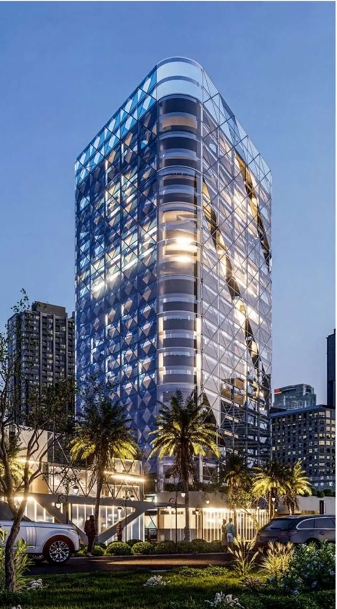
Architectural Atmospheres
A collection of architectural and landscape studies exploring warm light, atmosphere and realistic presentation.
Explore project ↗ABHI RAJ G. N. / SELECTED VISUALIZATIONS
An exploration of architecture, light and atmosphere. Discover interior and exterior visualizations that bring design ideas into focus.
01 / Projects showcase
Residential spaces, hospitality interiors and architectural exteriors.
Showing 12 project studies

A collection of architectural and landscape studies exploring warm light, atmosphere and realistic presentation.
Explore project ↗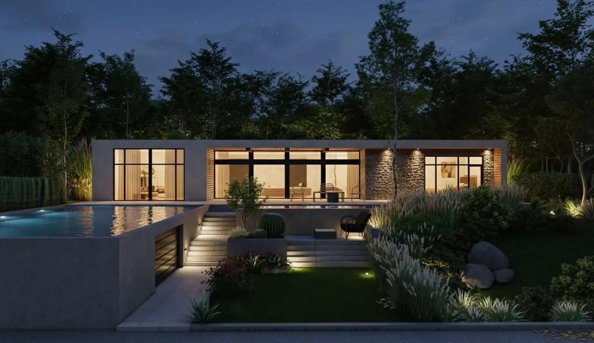
A resort environment brought to life through natural lighting, lush landscaping, refined materials and an inviting evening atmosphere.
Explore project ↗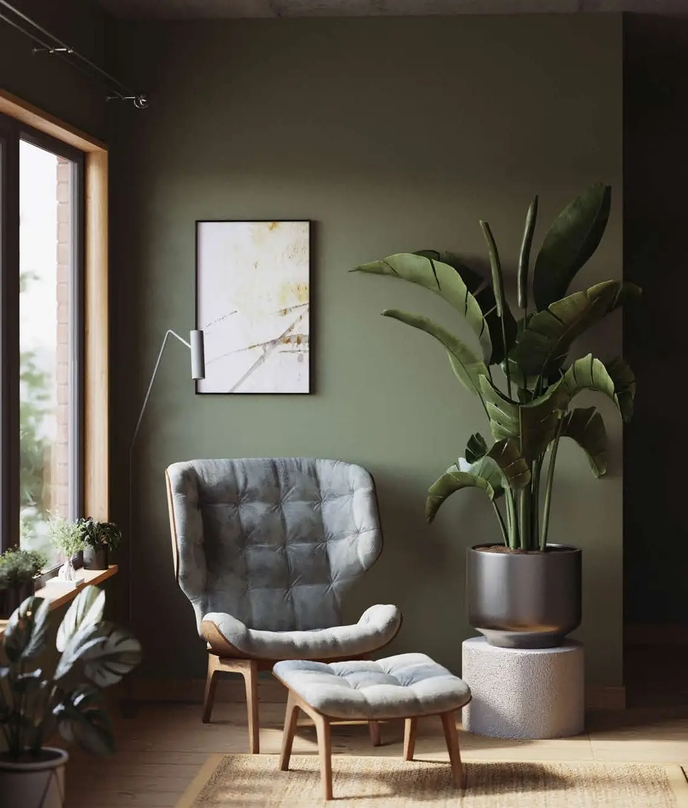
A series of fully modeled interior scenes exploring how light, shadow, texture and composition can communicate a feeling as much as a space.
Explore project ↗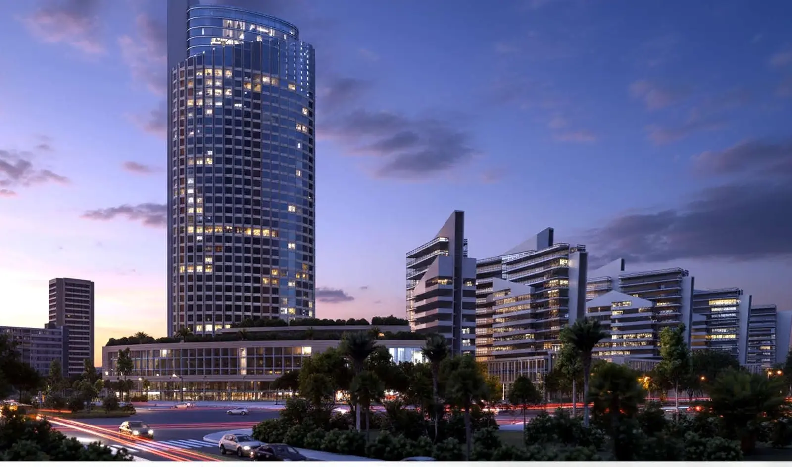
A high-rise exterior study with detailed lighting, landscape context and material refinement, composed for a professional architectural presentation.
Explore project ↗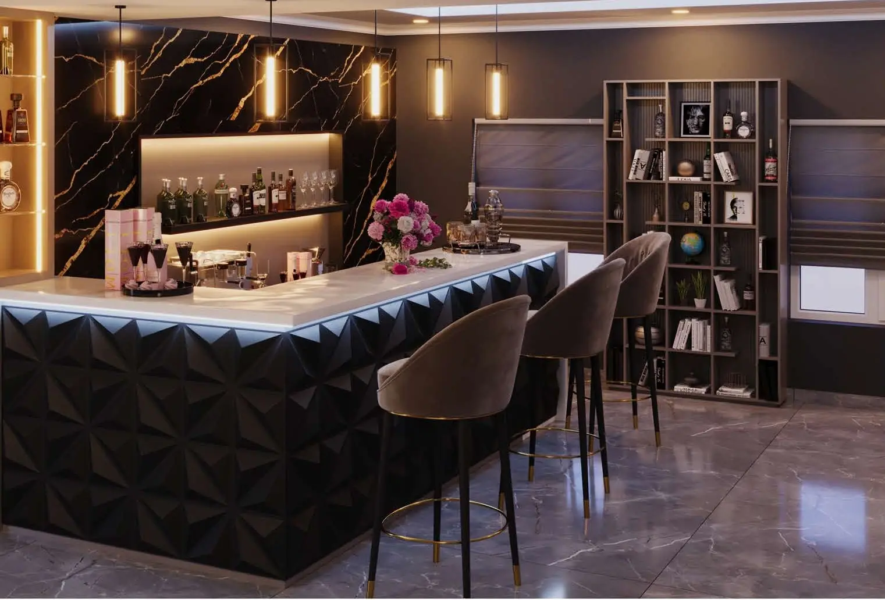
A warm café and bar blending casual comfort with sophisticated detailing, custom furniture and carefully balanced mood lighting.
Explore project ↗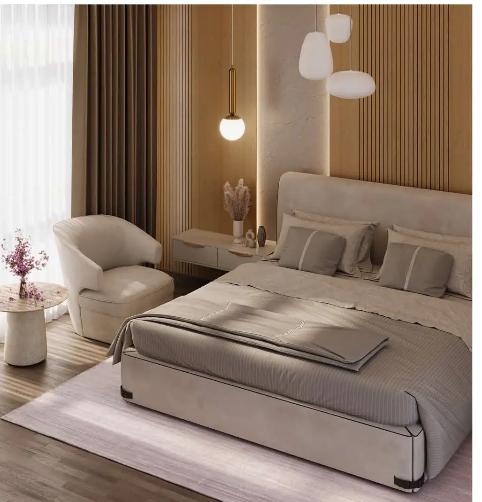
Bedroom and bathroom studies designed around modern comfort, considered furniture, warm materials and soft, realistic lighting.
Explore project ↗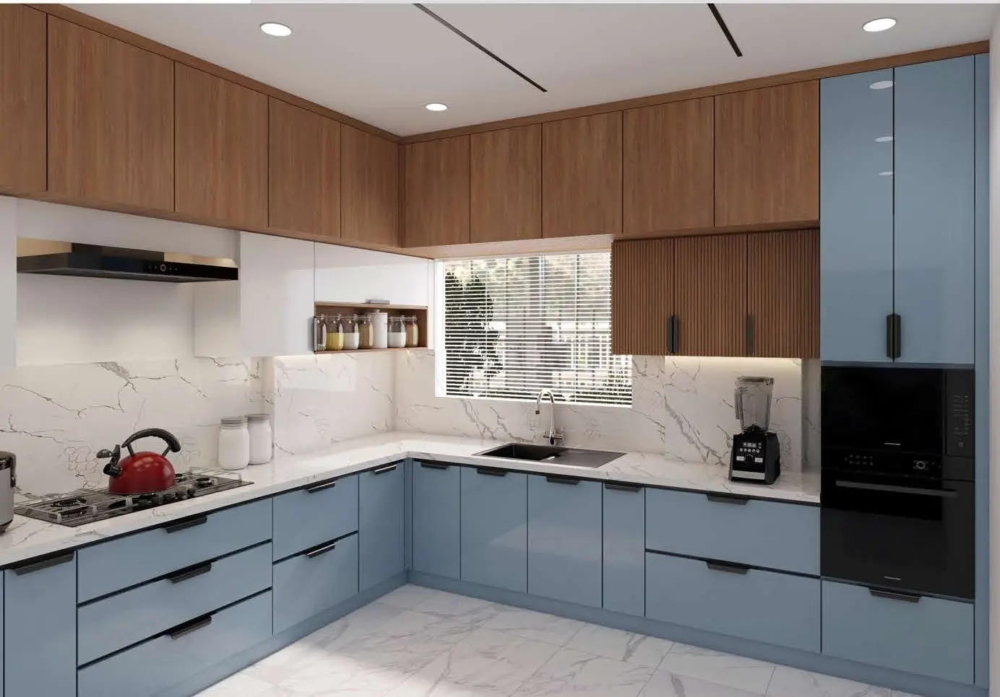
Kitchen visualizations combining functional cabinetry, refined countertops and considered lighting with a warm, contemporary finish.
Explore project ↗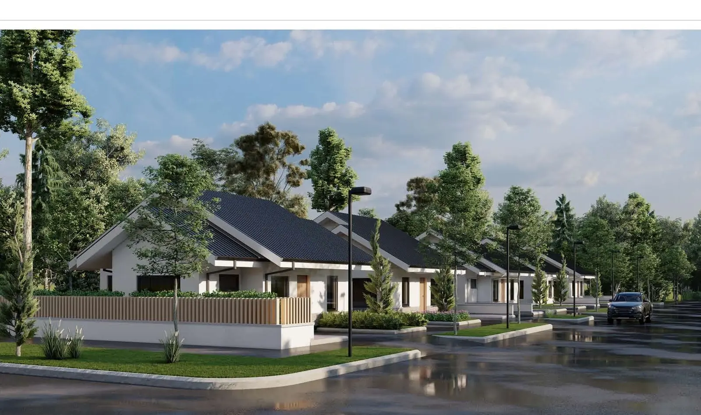
A villa exterior presentation with natural light, refined materials, contextual landscaping and atmospheric effects.
Explore project ↗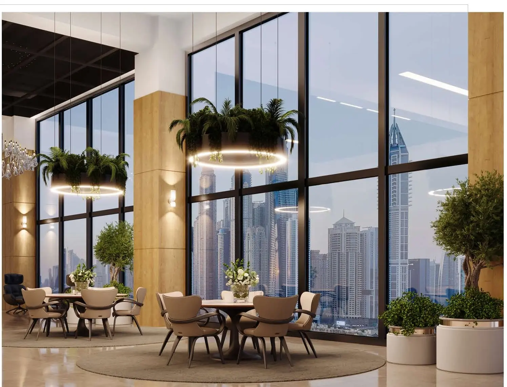
A contemporary hotel interior inside a high-rise building, developed through detailed architectural modeling, furniture and an immersive lighting treatment.
Explore project ↗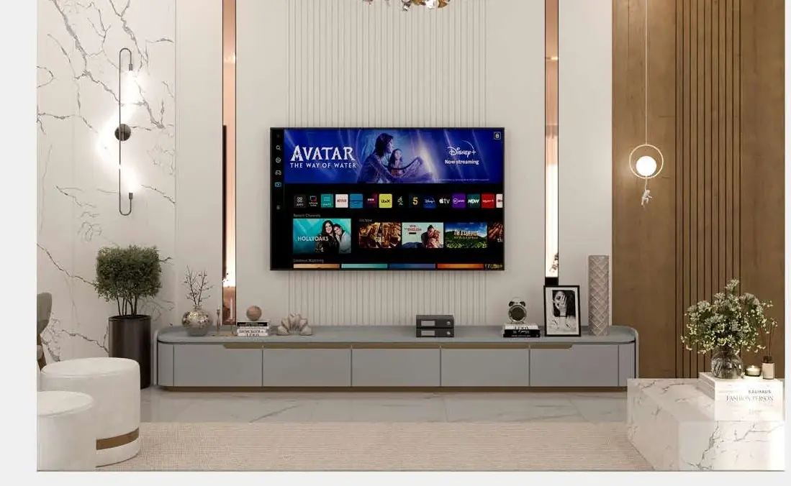
A modern living room in Ajman with a functional layout, detailed furniture and realistic materials, composed to feel warm and comfortable.
Explore project ↗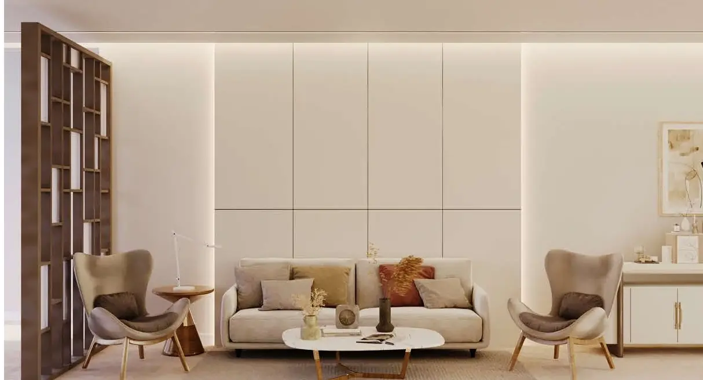
A balanced living space emphasizing careful furniture modeling, refined material choices and natural light, depth and texture.
Explore project ↗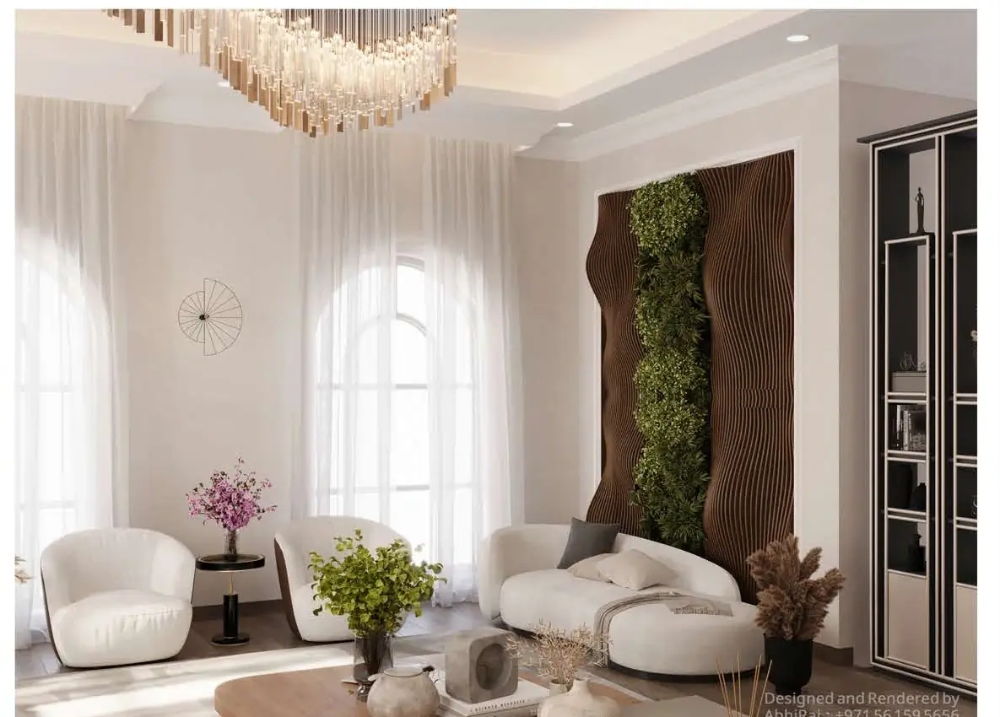
An elegant residential living room tailored to the client’s needs, refined through realistic rendering and detailed post-production.
Explore project ↗360° virtual tour
Drag to look around. Use + / − to zoom, or go full screen for the best view.
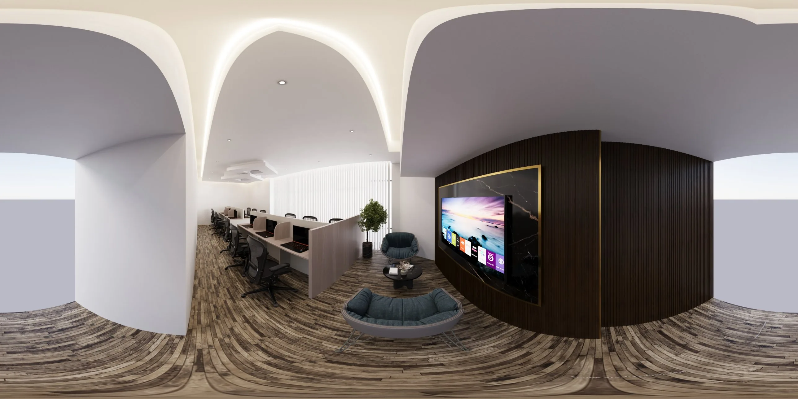
Commercial · Office interior
02 / Project highlights
Tools and achievements reflect the supplied 2025 portfolio. Individual pages identify original modeling and studies using externally sourced base models.
03 / Project exploration
Explore the concept, creative contribution, tools and original presentation sheet for each project.